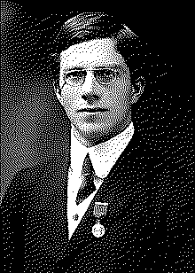

| годы | 1890–1962 |
| поле | вывод · генетика · планирование экспериментов |
| дал статистике | дисперсию, ANOVA, правдоподобие, значимость |
| алфавит | греческий — параметры совокупности (μ, σ, ρ) |
| тень | евгеника · отрицание вреда курения |
| связано | Пирсон · Два алфавита · дисперсия |
тот, кто отделил истину от оценки.
Рональд Фишер построил статистику вывода — и подарил ей греческий алфавит совокупности.
Фишер родился в 1890 и стал, возможно, главным статистиком XX века. В Кембридже изучал математику; с детства у него было очень слабое зрение, и думать он привык геометрически — образами, а не формулами на бумаге.
Работая на сельскохозяйственной станции Ротамстед, он почти в одиночку создал статистику вывода. Ввёл понятие дисперсии (1918) и дисперсионный анализ, метод максимального правдоподобия, достаточную статистику, информацию Фишера. Заложил планирование экспериментов — рандомизацию, контроль — и проверку значимости с p-value1. Его «Statistical Methods for Research Workers» (1925) и «The Design of Experiments» (1935) обучили статистике поколения; распределение F названо в его честь.
В 1922 Фишер провёл черту, без которой статистики не существует: «параметр» против «статистики», истинное против оценённого. Параметрам совокупности он отдал греческие буквы — μ, σ, ρ2. Это второй алфавит — для того, чего не видишь.
Фишер был и великим генетиком: соединил Менделя с Дарвином и стал одним из основателей популяционной генетики3. И здесь та же тень: как и Пирсон, он был евгеником и возглавлял ту же Галтоновскую лабораторию4. Под конец жизни он публично отрицал, что курение вызывает рак, доказывая, что связь может быть мнимой, — мастер различать корреляцию и причинность сам на этом споткнулся5.
Он раздавал статистике инструменты, которыми она пользуется до сих пор, — и ссорился почти со всеми, кто ими пользовался.
Характер у Фишера был тяжёлый: с Пирсоном-старшим, потом с его сыном Эгоном и Нейманом он враждовал десятилетиями. Но именно его греческие буквы и латинские буквы Пирсона вместе образуют язык, на котором статистика говорит сегодня.